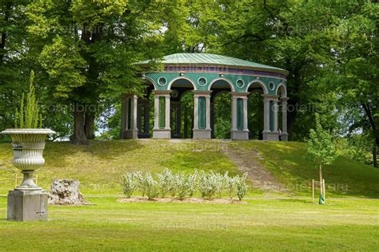
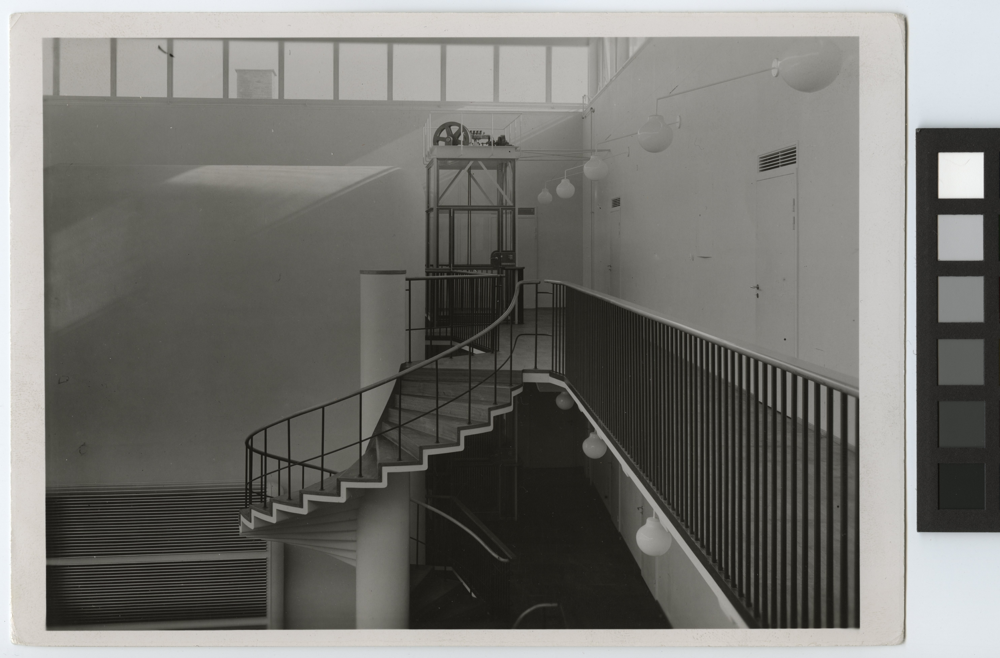

Den 24 Augusti 2024
Vigsel
Vigseln äger rum i
Ekotemplet, Hagaparken klockan 15:00.

För att ta sig till ekotemplet tar man lättast en buss till hållplats
Haga Norra,
och promenerar sedan den resterande kilometern genom hagaparkens grönska. Google maps eller SL.se har båda bra reseplanerare.
Man kan också ta bilen till
parkeringen vid Haga Norra.
Har man svårt att gå en kilometer så är det tillåtet för taxi och färdtjänst att köra nästan hela vägen fram till
ekotemplet, men notera att detta inte är tillåtet för privata bilar.
Bröllopsfest
Festen sker på
Restaurang Asplund, Solna.
Vi hyr buss för att skyffla er från hagaparken till restaurangen.

Restaurangen ligger i f.d. Statens bakteriologiska laboratoriums lokaler, ritade av Gunnar Asplund.
Det ser inte ut exakt såhär längre, fotografiet är taget 1937.